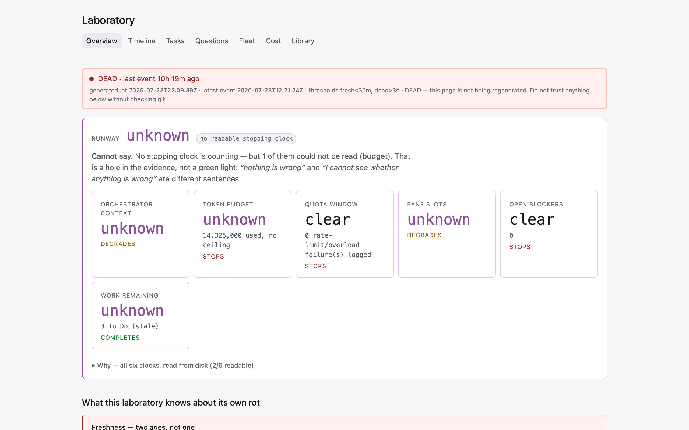
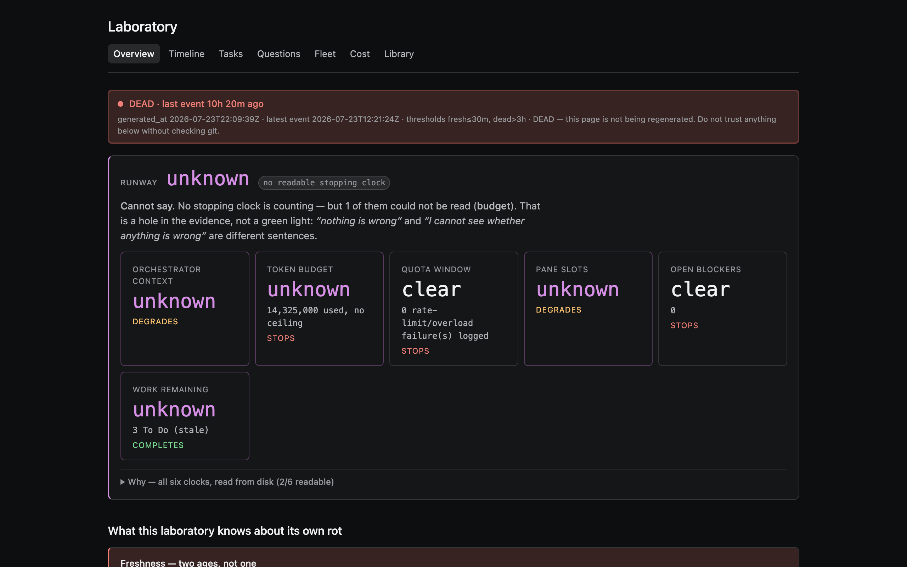
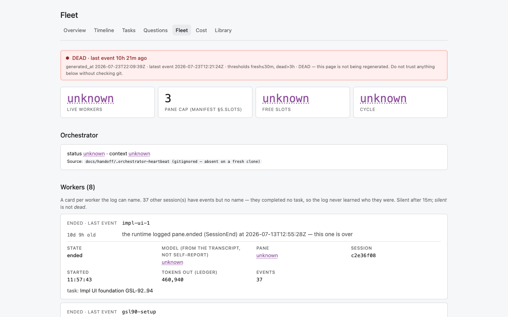
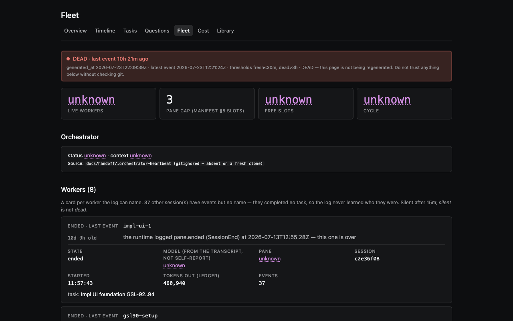
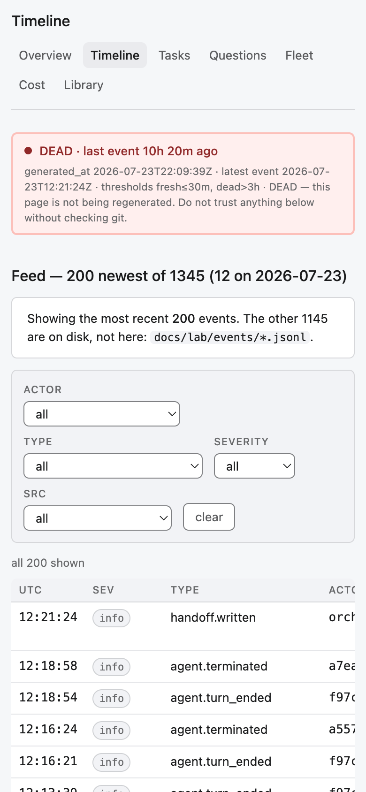
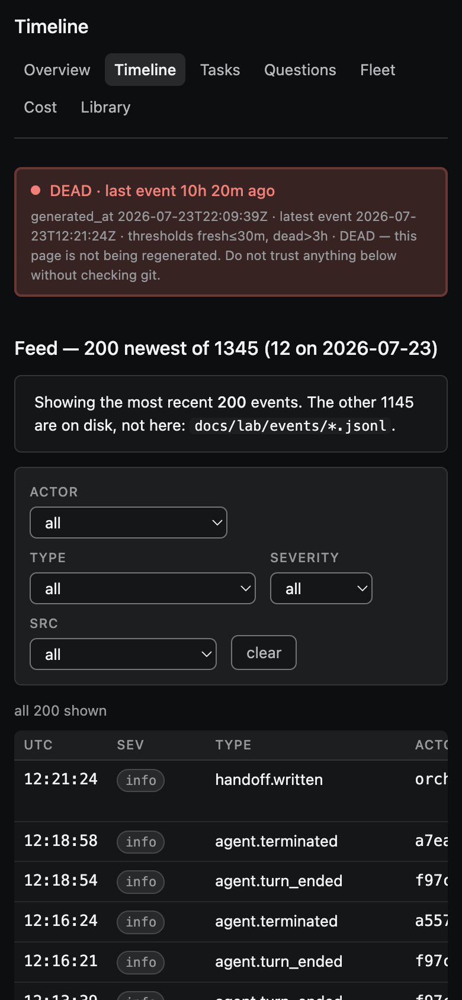
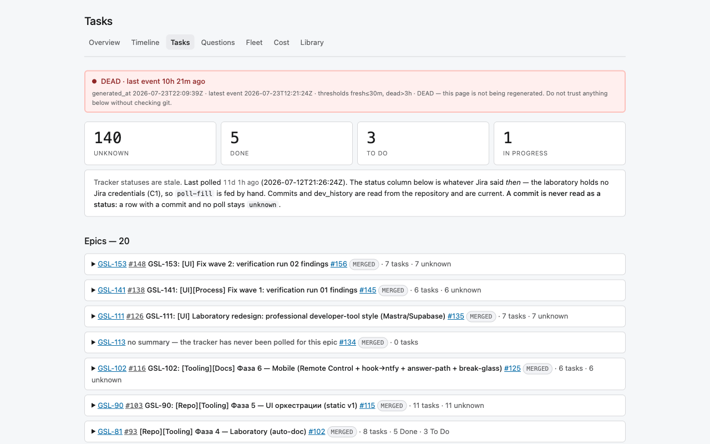

Acceptance epic GSL-138 · regression over prior findings · main @ 1f1899f (merge of fix wave 3, PR #165) · tracking task GSL-162
Verifies that already-closed findings stay closed in the committed artifacts after fix wave 3. Not a fresh audit — it hunts no new problems, fixes nothing.
git archive 1f1899f → temp tree; git show 1f1899f:<path>), never the modified file on disk. Source under tools/lab/ui/src, tools/lab/chronicler.py and tools/lab/smoke.sh is clean (tree == HEAD) and is grepped directly.
GSL-114 (390×844), GSL-146 (1280×800) and GSL-156/157 (index Freshness, 1280×800) are measured live in Chromium over the committed blobs served from localhost — viewport frames, never fullPage. All 34 invariants hold — no [REGRESSION] tickets were filed. Line numbers below are re-read at 1f1899f (they shifted under the wave-3 edits and the wave-3 rebuild).
| Ticket | Invariant (must be true in the artifact) | Verdict | Evidence — line:file / frame @ 1f1899f |
|---|---|---|---|
| GSL-113 critical |
Mobile projection degrades instead of claiming FRESH forever — header re-graded, two-ages caveat present. | HOLDS | mobile/README.md — header carries “DEAD at build … old at that moment”; caveats “Frozen at build time”, “two ages here, not one”. |
| GSL-114 major |
Timeline @390px: no page overflow; the two summary tables’ value column fits the card (with .wrap scroll fallback). |
HOLDS | Chromium 390px: scrollWidth==clientWidth==390, pageOverflow 0, 7 nav links; wide summary table 888>366 scrolls inside .wrap overflow-x:auto. See frames below. |
| GSL-115 major |
Without JS the header does not assert “FRESH · Live … right now”; the live verdict is JS-only. | HOLDS | site/index.html <noscript>: “frozen at the build … Trust the timestamp, not the tense.” Live-verdict string lives only in <script id="verdicts" type="application/json">; 0 FRESH·Live in <noscript>. |
| GSL-116 minor |
Overview prints the question type with a semantic colour modifier (BLOCKER ≠ FYI grey). | HOLDS | screens/overview.tsx:73 — class={`tag ${i.type}`}. |
| GSL-117 minor |
Filter select/input/button borders meet WCAG 1.4.11 (≥ 3:1). | HOLDS | theme.ts:463–469 — .filters select/input/button use --line-strong. |
| GSL-118 minor · fix-wave 1 |
Context gauge reads “X% (rolls at Y%)”, never the “N% of M%” product misreading — in source and built pages. | HOLDS | chronicler.py:1328 — "%d%% (rolls at %d%%)"; built index carries rolls at 80%; grep [0-9]+% of [0-9]+% over built pages → 0. |
| GSL-119 minor |
.unknown no longer italicises the whole clock container; axis labels stay upright. |
HOLDS | theme.ts:373 — span.unknown{…font-style:normal…} (the whole rule now span-scoped, GSL-156, even tighter); clock styling scoped to .clock.unknown .clock-val (239). |
| GSL-120 major |
Cost declares its per-cycle incompleteness rather than silently showing fewer rows than promised. | HOLDS | site/cost.html — “no per-cycle row here …” + “every sum below is LOW by an unknown amount”. |
| GSL-121 major |
Detail values are returned whole and wrap; no silent .slice(0,90) mid-word clip. |
HOLDS | components.tsx:207–219 — “THE VALUE IS RETURNED WHOLE … values WRAP rather than clip”; eventDetail returns String(v) whole; .slice(0,90) survives only in the comment, 0 in code. |
| GSL-122 minor · fix-wave 1 |
Timeline provenance caption prints the computed hook share, not “that half of the log”. | HOLDS | site/timeline.html — “93% of the log cost 0 tokens”; source screens/timeline.tsx:179 uses mechanical_share; “that half” → 0 hits. |
| GSL-123 minor · fix-wave 1 |
Library cross-index: an untitled row carries an unknown marker; zero blank title cells in the built page. |
HOLDS | site/library.html — unknown marker (“no first heading to read a title from”), 0 <td></td>; source screens/library.tsx. |
| GSL-124 major |
Meter classes .ok / .warn / .dead are declared, so a warning renders in warn ink, not body colour. |
HOLDS | theme.ts:327–329, 358–360 — .tag.ok/.warn/.dead + span.ok/.warn/.dead; every built page (7/7) carries .tag.ok{ inline. |
| GSL-125 minor |
Epic coverage chip differs for ok vs warn (colour carries information). | HOLDS | theme.ts:327–328 — .tag.ok uses --ok-*, .tag.warn uses --warn-* (distinct fill + border). |
| GSL-126 major |
The staleness banner re-ages against the reader’s clock every second inside the fresh window (grade still only worsens). | HOLDS | client.ts:63 — regradeStaleness() (called line 268); two-ages logic present, freeze-the-age bug removed. |
| GSL-127 major |
Library “files” column shows the real file count, not the list-cutoff cap of 40. | HOLDS | screens/library.tsx:108 — “s.count is the count of files FOUND, not a list-cutoff limit”; bundle vs real tree @1f1899f: dev_history 118 == 118, handoffs 47 == 47. |
| GSL-128 major |
An owner-answered question is not filed under “Decided without you”. | HOLDS | screens/questions.tsx:165 — split by authorship: decidedByYou = answered_by==="owner"; the rest is “without you”. |
| GSL-129 major |
Fleet’s “N live workers” KPI no longer contradicts all-ended cards — the two sources are reconciled in prose. | HOLDS | screens/fleet.tsx:157–159 — bridge note: “live workers … counts panes open right now … Two sources, two questions — the counts need not be the same set.” |
| GSL-130 minor |
Tasks epic rows print the PR link once — no doubled #NNN#NNN token. |
HOLDS | site/tasks.html — #[0-9]+#[0-9]+ → 0. |
| GSL-131 major |
Library headings are not cut at 110 chars mid-word in the render bundle. | HOLDS | render_bundle.json — 247 titles, 26 exceed 110 chars (cap gone), 0 end in an ellipsis, max 158; source doc_title returns the title WHOLE (chronicler.py:1683, no [:110]). |
| GSL-132 minor · fix-wave 1 |
Prose pack: Tasks “Last polled … ago” (not “old”) + data-age-suffix contract; Cost twin tautologies gone; two-ages sum is exact. |
HOLDS | tasks.html — “Last polled … data-age-suffix="ago"”; the duplicate echoes “no token ceiling exists on disk” / “not one quota event has EVER been logged” → 0; status.json max_event_age_s 35295 == generated_at − latest 35295 (exact: 79779−44484). |
| Ticket | Invariant (must be true in the artifact) | Verdict | Evidence — line:file |
|---|---|---|---|
| GSL-142 docs |
dev_history README documents the per-task assets convention, the file-naming scheme, and the run-vs-dev_history separation. | HOLDS | docs/dev_history/README.md — assets/<TASK-KEY>/, naming <page>-<width>-<theme>.png, one-way run-copy, “Разграничение с верификационными ранами”. |
| GSL-143 docs |
verifications README is a complete run standard: path/numbering, EN+RU dashboard, mandatory design/, fullPage ban (1280 & 390, both themes), numbered items with Jira chips, file:// self-containment, references runs/01. |
HOLDS | docs/reports/verifications/README.md — all listed points present (path/numbering, “HTML-дашборд EN”, design/×5, 1280, 390, “обе темы”, numbered items, file://, “fullPage-«полотна» запрещены”); GSL-138/runs/01/ cited as the reference example. |
| Ticket | Invariant (must be true in the artifact) | Verdict | Evidence — line:file / frame |
|---|---|---|---|
| GSL-146 spec-violation |
span.unknown is NOT swallowed to an 11px muted caption by the .kpi span / .wk-f span cascade — it keeps --unk at value size (spec 8.3), on Fleet and Cost. |
HOLDS | theme.ts:224, 525 — .kpi span:not(.unknown) / .wk-f span:not(.unknown). Computed live on fleet: .kpi span.unknown = 28px magenta rgb(142,77,157) vs label 11px muted rgb(104,105,107); .wk-f span.unknown = 13px magenta. See frames. |
| GSL-147 spec-violation |
Tasks board maps Jira statuses per spec 7.2: Done → ok, To Do → warn, In Progress → info — not neutral. | HOLDS | screens/tasks.tsx:91,120 — STATUS_TONE + tag st ${tone}; theme.ts:344 .tag.st.info scoped. Built tasks.html: tag st ok×6, warn×3, info×1. |
| GSL-148 industry-std |
Library no longer prints a literal & where a real & was meant — doc_title decodes HTML entities once, before the view escapes. |
HOLDS | chronicler.py:1706 — html.unescape after tag-strip. Library report titles render single-escaped & (a real &). The one bundle & is the deliberate markdown dev_history title about the entity — see “watch”. |
| GSL-149 industry-std |
Timeline severity filter options are worst-first (from SEVERITIES), not appearance order. |
HOLDS | screens/timeline.tsx:48 — facet values are SEVERITIES.filter(...); severity.ts:31 SEVERITIES = [incident, warn, info, unknown]. Built timeline.html option order: incident → warn → info (unknown absent — no row of that severity). |
| GSL-150 industry-std |
Derived pages ship consistent with the tree that made them: the rebuild is the wave’s final commit (no post-rebuild commit), so no undercount / stale checkout residue that runs in the reassuring direction. | HOLDS | docs/lab/README.md — “Rebuild discipline” norm. Wave-3 rebuild a629b6f is the merge’s 2nd parent (1f1899f^2) with 0 commits after it. dev_history count exact (118). Post-merge branch-name residue is norm-permitted — see “watch”. |
| GSL-151 industry-std |
Cost per-model partial cell wears its own .partial-note role, not the borrowed Fleet .wk-models class. |
HOLDS | screens/cost.tsx:153 — class={m.partial > 0 ? "partial-note" : "dim"}; theme.ts:383 — .partial-note{color:var(--warn)}. Built cost.html: class="partial-note" ×2, 0 wk-models in markup (Fleet-only). |
| GSL-152 industry-std |
The RunwayStrip comment describes unk by fact — magenta + solid border — and names the dashed-border ban, rather than inviting dashes back. |
HOLDS | runway.tsx:55–57 — “unk is magenta … carried as ink and a SOLID border edge: the redesign bans dashed borders outright … the sole dotted survivor is the .unknown underline”. |
| Ticket | Invariant (must be true in the artifact) | Verdict | Evidence — line:file / frame @ 1f1899f |
|---|---|---|---|
| GSL-156 major · arch |
The whole .unknown rule is scoped to span: a container carrying the class (card sh-m unknown, clock unknown) must NOT paint its prose in status magenta, and cursor:help lives on the marker only. |
HOLDS | theme.ts:373 — span.unknown{color:var(--unk);font-style:normal;cursor:help;text-decoration:underline dotted}; no bare .unknown{color…}. Live on index (dark): .clock.unknown container cursor auto, axis rgb(151,152,155)=--muted, only .clock-val magenta rgb(213,143,229)=--unk; Freshness heading/value = --fg, cursor auto. See frames. |
| GSL-157 major · func |
Freshness at grade=dead wears .sh-m.dead (a read verdict — red edge + fill), never the unknown “cannot read” magenta. dead ≠ unknown. |
HOLDS | selfhealth.tsx:27 — METER_CLASS.dead="dead"; :56 ternary h.grade==="dead" ? "dead" : "unknown". Built index.html: class="card sh-m dead" id="sh-freshness", 0 sh-m unknown. Live: left edge rgb(144,40,40)=--dead (light) / rgb(240,127,119) (dark), fill --dead-soft. Smoke: smoke.sh:291–307 throwaway-lab dead fixture (event 20h old → page grades DEAD), control witness status.json. |
| GSL-158 minor · pixel |
The Tasks gh-column absence dash wears --muted (spec 6.5), the same absence glyph as Cost and Library — not --dim. |
HOLDS | screens/tasks.tsx:111 — <span class="muted" title="no GitHub issue mirrors this key">; built tasks.html: muted glyph, 0 old class="dim" variant. Live computed rgb(104,105,107)=--muted, not --dim rgb(90,91,93). See frame. |
| GSL-159 minor · pixel latent |
The runway-bind badge in the clear state carries the full ok triple (background --ok-soft, ink --ok, border --ok-border, spec 7.1) — one role, not ok ink over a neutral shell. |
HOLDS | theme.ts:416 — .runway-bind.ok{background:var(--ok-soft);color:var(--ok);border-color:var(--ok-border)}; present in all 7 built pages. Live rule-probe (injected .runway-bind.ok): bg rgb(230,250,233)=--ok-soft, ink rgb(0,120,53)=--ok, border rgb(177,223,185)=--ok-border — all three match, not the neutral shell. Latent: clear state not rendered (bundle is bound=unknown) — see “watch”. |
| GSL-160 minor · arch |
Role-borrowed class names returned to owners: Fleet/Cost static captions wear their own .scope-note (not the live .filter-count contract); the question high-impact flag wears .tag.high-impact (not .tag.BLOCKER). |
HOLDS | theme.ts:479 .scope-note{color:var(--muted)…}, :335 .tag.high-impact{…--dead…}; fleet.tsx:164 + cost.tsx:76 class="scope-note", questions.tsx:78 class="tag high-impact". Built: fleet scope-note (live --muted), cost scope-note data-cycle-gap="30"; borrowed filter-count/tag BLOCKER gone from these spots. High-impact badge markup latent (no high_impact question in data) — CSS rule present — see “watch”. |







clock.unknown container keeps its prose muted), Fleet @1280 (GSL-146 — unknown values magenta at value size), Timeline @390 (GSL-114 — no overflow, table scrolls in-card), Tasks @1280 (GSL-158 — muted absence dash). Everything else is byte-level over the committed blobs.bound=unknown, so the runway-bind.ok clear-state badge does not render on any page. I did not fake a clear build; instead I injected a synthetic <span class="runway-bind ok"> into the built page’s own stylesheet and measured the computed triple — bg --ok-soft, ink --ok, border --ok-border, all three, not the neutral shell. The rule is present and effective; its first clear build will be correct.high_impact:true, so <span class="tag high-impact"> renders nowhere and the page shows 0 “high impact” and 0 tag BLOCKER (only type badges CLARIFY/DECISION). The source uses the new class and theme.ts:335 declares .tag.high-impact — the rename holds; only the flag’s appearance awaits a high-impact question. The Fleet/Cost .scope-note halves of GSL-160 DO render and are confirmed live.render_bundle.json carries exactly one literal & — inside the dev_history title “…Library больше не печатает литеральный «&» в тайтлах отчётов”. That markdown H1 literally contains the entity because it is about it, and doc_title does not unescape markdown headings (only HTML <title>/<h1>, by design). The real HTML report titles decode to a real & (single-escaped in the page). If a future audit greps & over the bundle, that one hit is content, not the double-escape defect.status.json names the fix branch, and that is norm-compliant. delivery.branch = GSL-161-fix-wave-3, not main — the same post-merge residue the GSL-150 norm (docs/lab/README.md) explicitly accepts: “the Delivery card names the branch it ran on … healed by the next routine chronicler pass on main.” The rebuild a629b6f was the branch’s final commit with nothing after it — the real invariant. Owner decision available: run one routine chronicler pass on main if the Delivery card should read main right now; optional per norm.data-age-suffix split is intentional (GSL-132). Built tasks.html carries 9 ="old" and 1 ="ago". Only the “Last polled” slot needed “ago”; the nine “old” suffixes are other ages where “old” is the correct phrasing — not a partial fix. The Cost twin-tautology branch (“No quota event …”) also does not render at current data because quota.total = 1; the arithmetic invariant is checked directly instead: 35295 == 35295.Регрессионный лейн run 04 по приёмочному эпику GSL-138, на main @ 1f1899f (merge фикс-волны 3, PR #165). Задача — подтвердить, что ранее закрытые находки остаются закрытыми в закоммиченных артефактах после фикс-волны 3. Новых проблем не искал (это параллельный fresh-аудитор), ничего не чинил.
Итог: 34 из 34 инвариантов HOLDS. Регрессий (REGRESSED) — 0. Непроверяемых (NOT-VERIFIABLE) — 0. Новых [REGRESSION]-тикетов не заведено.
.unknown скоуплен на span, Cost честно объявляет усечение, значения возвращаются целиком (без slice(0,90)), Library показывает реальные счётчики (dev_history 118==118, handoffs 47==47) и маркер unknown, Tasks не дублирует ссылку PR и пишет «ago», баннер переоценивает возраст, render_bundle несёт 247 тайтлов (26 длиннее 110, 0 троеточий), инвариант двух возрастов сходится точно (35295 == 35295).span.unknown не «съедается» каскадом (магента на размере значения — измерено вживую), статусы Tasks получили тона ok/warn/info, doc_title декодирует HTML-сущности, severity-фильтр Timeline worst-first, rebuild-дисциплина соблюдена, Cost-ячейка носит собственный .partial-note, комментарий RunwayStrip описывает unk по факту..unknown скоуплено на span, контейнер .clock.unknown не красит прозу (ось --muted, магента только на .clock-val, cursor auto) — GSL-156; Freshness при grade=dead носит .sh-m.dead (красный край, вживую), не unknown-магенту — GSL-157; глиф отсутствия на Tasks покрашен --muted (вживую rgb(104,105,107)) — GSL-158; бейдж runway-bind.ok несёт ok-тройку целиком (проверено живым пробником правила; сам clear латентен при bound=unknown) — GSL-159; заимствованные имена ролей возвращены: .scope-note на Fleet/Cost (вживую), .tag.high-impact для флага вопроса (правило на месте, бейдж латентен — нет high-impact вопроса) — GSL-160.Ключевое методическое решение. Рабочее дерево грязное после параллельного chronicler-прогона, поэтому все built-инварианты проверялись по закоммиченному блобу (git archive 1f1899f → temp-дерево; git show 1f1899f:…), а не по изменённому файлу на диске; исходники tools/lab/ui/src, chronicler.py, smoke.sh чисты (дерево == HEAD). GSL-114, GSL-146 и GSL-156/157 измерены вживую в Chromium (390×844 и 1280×800, viewport, не fullPage) по тем же блобам через localhost. Две латентности (GSL-159 clear-бейдж; GSL-160 high-impact бейдж) и две намеренные тонкости (GSL-148 &; GSL-150 branch-residue) разобраны в секции «на что обратить внимание».